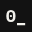
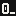

IDENTITY GUIDELINES · v0.5BRISTOL LIVE-CODE24/10/2026
ALG0RIDDIMS_
LIVE-CODED MUSIC AND VISUALS001 · SAT 21 NOV 2026 · HAMILTON HOUSE

Draft for review. Not for release.01 / 13
The mark is the name typed in a code editor: IBM Plex Mono Bold, Plex’s own dotted zero, and a cursor. If it can’t be typed, it isn’t the mark.
Every pattern is a step sequencer drawn as a grid: rows are tracks, dots and bars are hits. The artwork is made the way the night is made, with code.
Each event’s pattern grows from its date (DDMMYY). Every night gets its own artwork, the same night always gets the same one, and the poster and the projection match.
The event and the brand are locked. Only the look moves, by hand or with Randomise. A look never changes what the poster says or where it says it.
| LOCKED · EVERY ARTEFACT | VARIABLE · THE LOOK |
|---|---|
| Seed (event date) | Colourway (except INVERT) |
| Programme | Mode: sweep, poly, drift, rain, auto |
| Event text: subtitle, date, time, place, entry | Rate, swing |
| Set list and strapline | Decay, pulse, ripple |
| Palette (hex values) | Density, voice mutes |
| Layout zones on the cell grid | Depth, downbeat push, row shift |
| Type: Plex Mono Bold and Regular, Plex Sans | Auto scene length |
| Wordmark and cursor | Manual only: INVERT, downbeat flash, live edit |
A look is saved as a four-character code, such as 12A7. The same code gives the same look on any machine, in the player or in an export.
Set in IBM Plex Mono Bold at tracking 0, with Plex’s own zero: the dotted one. The dot is a hit in an empty step. The zero is a sequencer cell with one hit in it, the same dot the pattern is made of.
It is Plex’s default, so it comes out right in every app that has the font: InDesign, Figma, PowerPoint, Canva, a code editor. There is no feature to switch on and nothing to go wrong.
The cursor is the twelfth character: printed solid, blinking on the beat on screen. Running text spells the name Algoriddims; only the mark uses the zero.

32 px · typed 16 px · typed: dot gone
16 px · typed: dot gone
16 px · hand-setWordmark: at least 20 px type on screen (about 145 px wide), and 30 mm wide in print. Micro mark: at least 32 px. Below that the dot closes up and the zero reads as a letter O. Shown here enlarged, pixel for pixel.
For 16 px favicons, use the hand-set file in brand/. It is the one drawn exception, because no typeface keeps the dot at 16 px.
Don’t redraw it. Use the logo files: they are Plex’s own outlines. No custom letters or kerning.
Don’t swap the zero. No slashed zero, no letter O, no Ø. The dotted zero is the mark.
Don’t track or squeeze it. Tracking stays at 0 or the letters fall off the cell grid.
Don’t colour it. Paper on Ink or Ink on Paper. Colour belongs to the pattern.
Don’t drop the cursor. It is part of the mark at every size, the micro mark included.
The cell is one Plex Mono character at the base size. Sizes are whole multiples of it (1×, 2×, 3×), plus ½× for the seed line, so every size lands on the same columns. On a 1080-pixel poster the cell is 24 px.
Text sits in boxes cut out of the pattern. Boxes pad their text by one cell, start and end on cell edges, and are the ground colour, so they read as cleared cells of the field. Sub-lines indent two cells, like code. Left-aligned only. Tracking is always 0.
Three styles from a family of more than 100. Every extra weight is somewhere for the system to drift. Plex is under the SIL Open Font Licence: free for print, web, merch and the projector.
Labels are Regular and values are Bold, and values start on one column: the info block, the set list and the readouts all follow this.
Four colours never change. They are the series. Each voice in the sequencer has one colour, so the pattern can be read as a rhythm: red dots are kicks, paper bars are hats, the rare cyan hit is an effect.
Ground and every text box. About 80% of any layout.
All type, and the hat bars. About 10%.
Kick hits. About 5%. The heartbeat of every event.
Effect hits. 1% at most: the rarest hit on the page.
Type is Paper on Ink or Ink on Paper, nothing else. Never type on an accent; never an accent in type. Colour belongs to the pattern.
The fifth voice, the snare, carries the programme colour: see page 06.
Values are RGB: screen and projection come first. Retired from v0.1: #FF2B2B, #9B28FF, #A020FF, #1E1B1F, #0A0A0A, #F5F5F4, #F4F4F1 (the same colours drifting sheet to sheet) and Warm Brown #4A2A0E / #6B3F1E (no voice to map to).

Performance nights. 001 is a NIGHT.
Reads on paper
Teaching and open-laptop sessions. Green terminal phosphor.
Ink on paper
Talks, panels, listening sessions. Amber terminal phosphor.
Ink on paper
Online and streamed sets. Screen first.
Reads on paper
Open jams and first-timer sessions: anyone can take the laptop.
Ink on paper
Recordings, mixes, releases and write-ups after the night.
Ink on paperOne programme colour per piece, never two. It follows the snare’s rules: pattern only, never type, about 4–5% of a layout. The subtitle names the programme and the number runs across the whole series: BRISTOL LIVE-CODE / 001, then WORKSHOP / 002.
Each programme colour differs from Kick Red in lightness, not only hue, so the voices separate for colour-blind viewers. Orange and magenta were tested and left out: both sit too close to the red.
Guest or collab nights: the partner’s colour may take the snare slot if it is clearly lighter or darker than Kick Red and is not a near-copy of a programme colour. Otherwise the night stays NIGHT. Six is the ceiling: more programmes and the series stops looking like one series.
A colourway re-assigns the locked palette to the voices. It never adds a colour. The pattern stays the same; only what each hit is painted with changes.

Kick red, snare programme, hat paper, FX cyan. The default, and three looks in every seven.

Red and the programme colour only. The loudest arrangement: line-up drops, headline nights.

All paper except the snare. Calm and text-friendly: talks, info posts, long captions.

Paper only. One-colour print, low-key projection, behind photography.

Paper ground, ink hats, red kicks. Riso, daytime print, venue signage. Programme colours that don’t read on paper switch to ink.
 001 · seed 211126
001 · seed 211126 seed 120327 · example
seed 120327 · example seed 300427 · example
seed 300427 · exampleEach row is a sequencer track: a Euclidean rhythm E(k,n), the same idea as the (3,8) notation in TidalCycles and Strudel. Rows run at 16, 12 or 8 steps, so they drift against each other. Every eight rows the rotation steps on by one, so the pattern is edited as you read down the page.
The seed is the event date as DDMMYY. The random numbers come from mulberry32, so the Python generator (print) and the JavaScript player (screen) draw the same field, cell for cell. That was checked across six seeds and sizes.
Same seed + same size + same cell = the same artwork. Change the cell size and the field changes, so each format has one fixed cell (page 10).
seed · width · height · cell · output · programme (NIGHT, WORKSHOP, TALK, STREAM, JAM, ARCHIVE or a hex for a guest colour) · colourway (STANDARD, DUO, ACCENT, MONO, INVERT)
 1
2
3
4
5
6
1
2
3
4
5
6
Every artefact uses the same zones on the cell grid. Positions are given in cells from the edge, so they hold at any size. The poster shown is 1080 × 1350 px with a 24 px cell.
| ZONE | SIZE | PLACE (POSTER) | CONTENT |
|---|---|---|---|
| 1 Wordmark | 3× | col 2 · row 3 | ALG0RIDDIMS_ on every artefact |
| 2 Subtitle | 1× | col 4 · row 10 | Series or programme / number. Indented two cells. |
| 3 Info | 1× | right edge · row 14 | DATE (written from the seed), TIME, PLACE on two lines, ENTRY |
| 4 Set list | 1× | bottom left · 6 rows up | One act per line, time in Regular, name in Bold. Up to 8 lines on the poster. |
| 5 Strapline | 1× | right edge · one row under Info | Up to 4 lines of up to 18 characters. On VJ, level with the subtitle. |
| 6 Seed line | ½× | col 2 · 3 rows up | // alg0.field(seed=DDMMYY), the work credited to its own code |
The left side carries the name and the line-up; the right side carries the facts and the claim. The set list has the full width (39 characters on the poster) until it grows tall enough to sit beside the strapline; then it gets the width the strapline leaves. A name that does not fit is cut with … and the player says so: shorten it rather than shrinking type.
Nothing else is added to the layout. No logos in the field, no extra boxes, no type on the pattern outside a box.
The main asset: feed posts and the A-ratio print master.

Grid posts and event-listing thumbnails.

Type starts 11 rows down and the bottom zone sits 15 rows up, clear of the app’s buttons.

The projector ident between sets. No info block: the room already knows where it is.
Each format has one fixed cell size, so the same seed always gives the same field in that format. Never resize an export to make another format: render it.
Info and strapline hang from the right edge, two cells in. The set list sits on the bottom zone, from the base: poster and square 6 rows, story 15, VJ 4. The seed line sits under it.
For print, render the field as vector SVG with alg0_field.py at A-ratio (1240 × 1754, cell 27) and set the type on the same grid in InDesign. Don’t enlarge a screen PNG.

One playhead crosses the field each loop. The poster, played.

Each row loops at its own length (16, 12, 8), so rows phase against each other.

The field slides under a fixed playhead, like a tracker.

The playhead falls row by row. AUTO cycles all four, changing on the bar.
| BPM DRIVES | HOW |
|---|---|
| Playhead | One column per 16th note |
| Hits | Pulse as the playhead passes; decay is counted in steps, so it scales with tempo |
| Cursor | On one beat, off one beat |
| Rate · swing | Half or double time; swing delays every second 16th |
| Phrases | AUTO scenes, downbeat push and row shift land on bar lines |
| Never | The pattern itself. The date sets that, so the screen matches the poster. |
Type never moves. Only the field animates, and the downbeat push scales the field, not the boxes.
Loops are counted in whole bars, so every export joins up without a seam: 48 steps for a single sweep (5.1 s at 140 BPM), longer when row shift or AUTO is on.
Downbeat flash runs once per bar, about 0.6 Hz at 140 BPM, well under the 3 Hz photosensitivity guideline. It is never switched on by Randomise. If it is used on the night, say so on the event page.
Randomise picks a four-character code and builds every variable from it. Type the code back in and the look returns, on any machine. Anything set by hand marks the look CUSTOM and is exported as values instead of a code.
| VARIABLE | MANUAL RANGE | RANDOMISE PICKS |
|---|---|---|
| Colourway | all five | STANDARD 4 in 7; DUO, ACCENT, MONO. Never INVERT |
| Mode | 5 modes | any; POLY twice as likely |
| Rate | ½, 1, 2 | 1 three times in five |
| Swing | 0–60% | off, or 10–50% (35% chance) |
| Decay | 1–8 steps | 1.5–6 |
| Pulse | 0–100% | 15–80% |
| Ripple | 0–100% | off, or 30–100% |
| Density | 5–100% | 100%, or 55–95% |
| Depth | 0–100% | off, or 30–100% |
| Downbeat push | 0–100% | off, or 20–80% |
| Row shift · scenes | on/off · 4/8/16 bars | 30% chance · any |
| Voice mutes | any voice | hat or FX, rarely. Never kick or snare |
| Flash · live edit | on/off | never |
 1000 · STANDARD · POLY · depth, ripple
1000 · STANDARD · POLY · depth, ripple 1061 · ACCENT · POLY · depth
1061 · ACCENT · POLY · depth 12A7 · DUO · AUTO · ½ time, push
12A7 · DUO · AUTO · ½ time, push 14ED · MONO · POLY · swing, shift
14ED · MONO · POLY · swing, shiftSame seed, same event, four looks. Note a code beside each finished asset so it can be made again or matched on the projector.
In the player, open Export. PNG and PDF save a snapshot (the still poster or the current frame) at 1×, 2× or 3×; a 3× PDF of the poster is 274 × 343 mm at 300 ppi. MP4 LOOP renders a seamless loop frame by frame: H.264 in Chrome, Edge and Safari, VP9 where H.264 isn’t available.
For batches, run the same export from the repo folder. In the player: Export → Command line instead → Copy.
| generator/ | alg0_field.py: vector SVG fields for print, with programme and colourway. |
| player/ | alg0_field.js, the animated field and looks (a drop-in VJinA layer), and the player template. |
| dist/ | alg0_player.html, ready to open, and this PDF. |
| brand/ | Logo files: outlined SVG and PNG wordmarks, micro mark, favicons. |
| scripts/ | build_player, build_identity, make_marks, render_loop. |
| tests/ | Checks that print and screen draw the same field, cell for cell. |
Kick Red, FX Cyan, Ultraviolet, Phosphor and Acid Lime sit outside CMYK. A standard four-colour job will dull them. For physical runs, use risograph fluorescent inks or neon spot inks for screen print, swatched from the printer’s physical ink chart. Screen hex values are never the print reference.
| VOICE | NEAREST RISO INK · SWATCH TO CONFIRM |
|---|---|
| KICK RED | Bright Red / Fluorescent Pink |
| FX CYAN | Aqua |
| NIGHT · STREAM | Purple · Blue |
| WORKSHOP · JAM | Green · Fluorescent Yellow |
| TALK · ARCHIVE | Yellow / Orange · Medium Grey |
| INK (type) | Black |
INVERT is the print arrangement: paper ground, ink hats and type, red kicks. Proof it before committing.
v0.5 · 24/10/2026 · draft for review. The mark uses Plex’s own dotted zero; the slashed zero is retired. Adds outlined logo files, minimum sizes, a hand-set favicon, and one repo with build scripts and tests. Carries over v0.4: six programmes, five colourways, the six-zone layout, motion modes and look codes. Supersedes v0.2–v0.4.